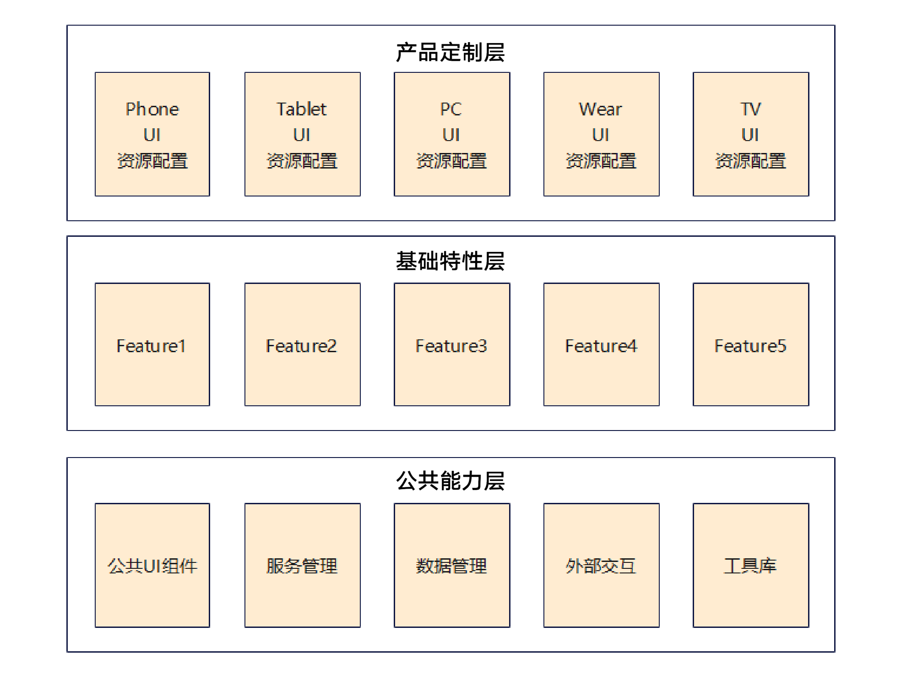
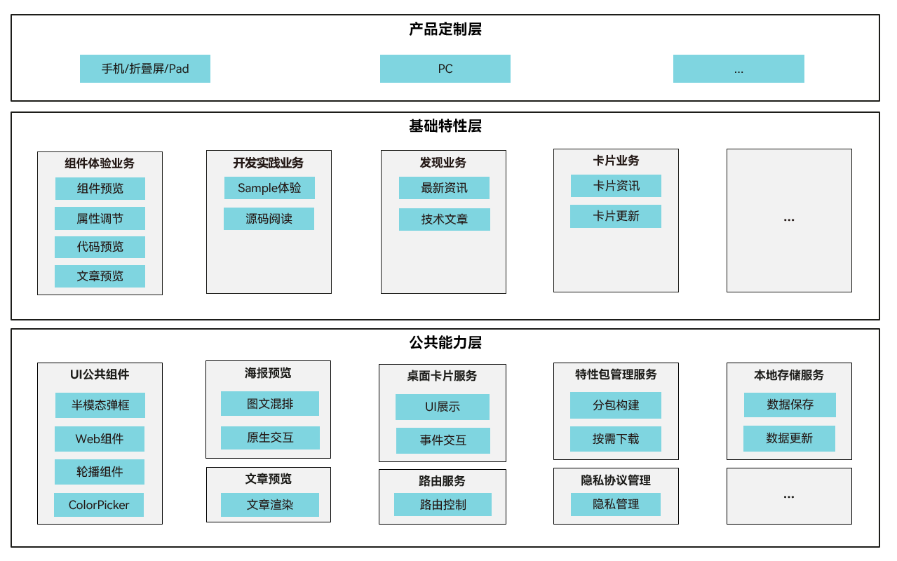
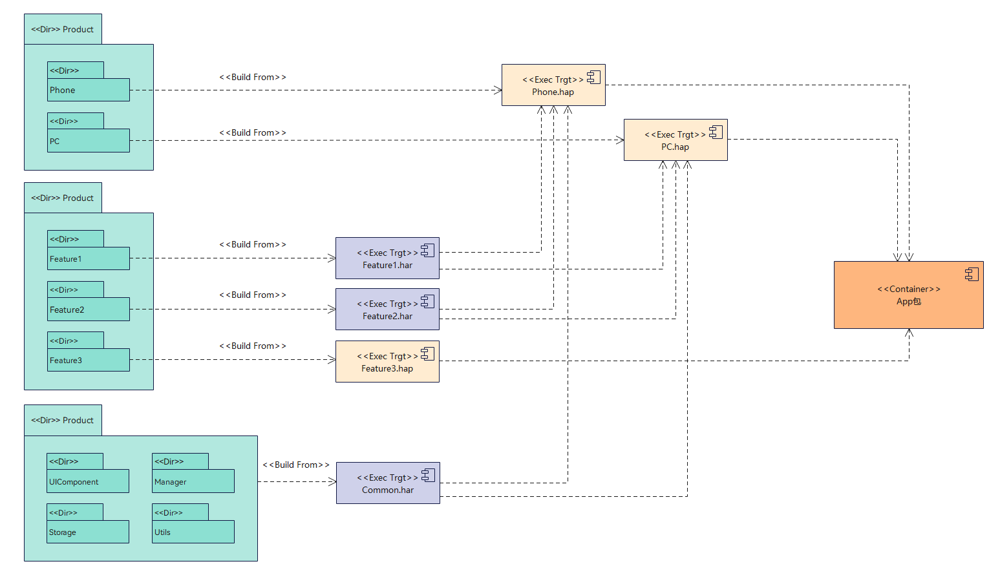
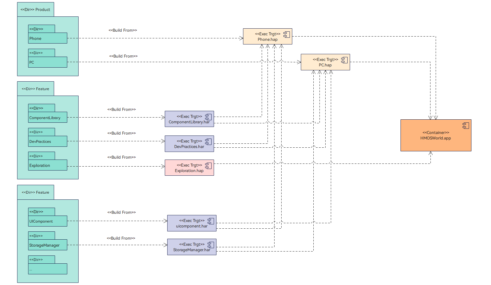
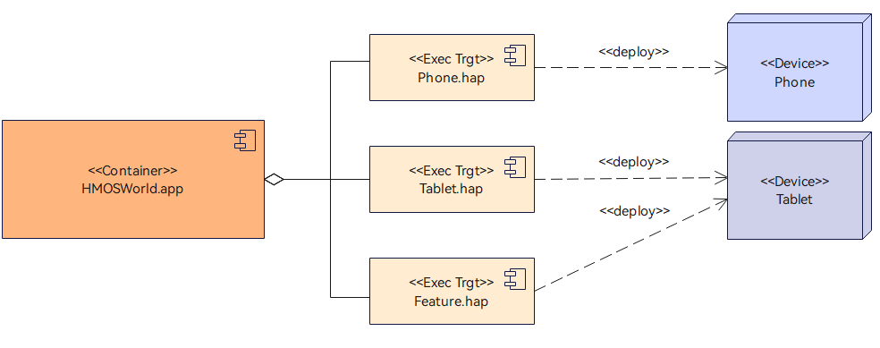
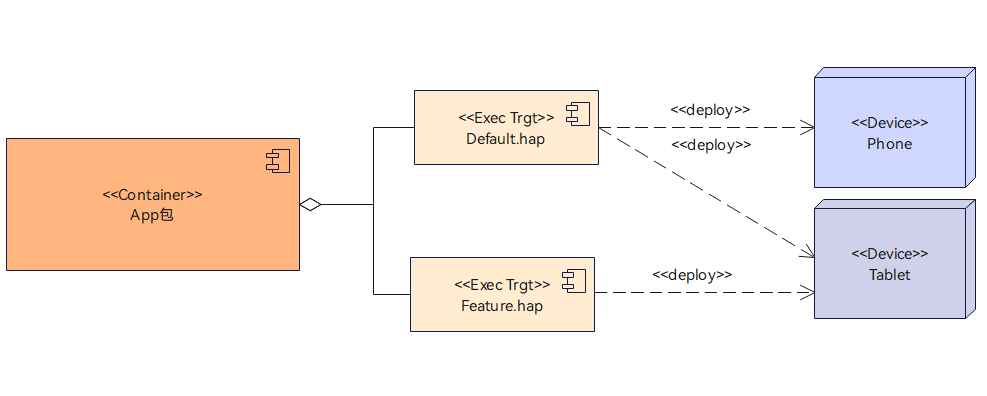

1 分层设计最佳实践
1.1 概述
HarmonyOS代码工坊的分层架构设计是为了在同一套代码工程的基础上，构建手机、平板等1+8设备上的产物，实现HarmonyOS应用的“一次开发，多端部署”的理念。
本文将从HarmonyOS代码工坊应用的设计、开发、部署三个视角说明HarmonyOS应用的三层架构规则与实践。
1.2 设计-逻辑模型
1.2.1 设计原则
典型的鸿蒙应用分层架构主要包括产品定制层、基础特性层、公共能力层，通过这样分层设计构建出一个清晰、高效、可扩展的设计架构。应用三层架构如下图：

- Products层（产品定制层）：包含不同设备形态的个性化业务，比如UI、资源和配置。与应用底座解耦，各个Product之间不可以横向依赖，向下依赖Features层和Common层。
- Features层（基础特性层）：指抽象应用基础特性集合。每个Feature高内聚，低耦合，可定制，供产品灵活部署。可以被Products层不同设备形态的Hap所依赖，但是不能反向依赖Products层，Features可以向下依赖Common层。
- Common层（公共能力层）：指基础能力集，是最小系统集。各个Feature包含的公共业务，都可以下沉到Common层。该层只可以被Products层和Feature层依赖，不可以反向依赖。
以上分层设计是将代码按照功能职责进行划分，每一层专注负责该层职责，提升代码的可维护性、可拓展性和代码复用性。分层设计优势如下：
- 解耦：不同模块之间尽量减少依赖，降低耦合度。
- 复用：公共能力可以被多个模块复用，避免重复开发。
- 清晰性：通过明确的层次划分，便于快速理解项目结构。
- 扩展性：新增功能时，只需在对应层添加模块，而不会影响其他部分。
同时对比传统的移动应用架构，鸿蒙应用三层架构在以下几个方面具有优势：
1.2.2 HarmonyOS代码工坊案例
HarmonyOS代码工坊在业务上需要支持手机、折叠屏、平板、PC这些设备，结合以上典型鸿蒙应用的分层架构设计，HarmonyOS代码工坊客户端的分层设计如下：

Products层
该层的主要负责提供应用在不同设备上的个性化业务，包含设备差异化的UI、资源和配置文件。当前HarmonyOS代码工坊支持手机、平板设备类型，后期将支持PC端，因此在产品定制层划分出手机、平板、PC三个不同设备入口。
Features层
该层是由应用的不同业务特性聚合而成，应用需根据自身业务划分出各个基础特性。结合HarmonyOS代码工坊当前运行实际业务，可划分为以下几个特性：
- 组件体验业务：负责提供ArkUI组件体验、系统能力体验、关键代码预览、相关资料、相关海报内容查阅等能力。
- 开发实践业务：负责提供Sample预览介绍、Sample按需加载体验、Sample源码查阅、相关海报内容查阅等能力。
- 发现业务：负责提供技术文章查阅、开发资讯查阅、相关海报内容查阅等能力。
- 我的业务：负责提供华为账号登陆管理、用户声音收集、版本更新、用户收藏内容管理。
- 桌面卡片业务：负责给用户提供桌面卡片。
Common层
该层是应用各个特性的基础能力集，由各特性的公共业务组成。结合HarmonyOS代码工坊特性模块划分，其公共能力包括公共UI组件、海报预览模块、文章预览模块、视频播控模块、特性包管理模块、存储服务、路由模块、桌面卡片服务、华为账号管理服务、消息推送模块、运维模块、版本管理等。
1.3 开发-代码与构建模型
1.3.1 设计原则
根据本文上述的逻辑模型提出的三层架构划分，以支持手机、PC产品为例，其对应典型的代码和编译模型如下图所示：

Products层
针对不同设备形态(DeviceType)，编译出不同的类型的 Hap包。
上述的构建模型是应用针对不同的设备形态使用不同的Entry Hap包，称之为Entry分包方案。
同样，应用可以在不同设备上使用一个共同的Entry HAP包，即entry共包方案。例如，Product层编译出一个Default.hap，直接分发到手机、平板、PC设备上。
分包、共包的设计选型，将在本文的应用部署原则详细展开。
- 不需要单独部署的Feature,编译成HAR包,打包到Product层的Entry Hap中。
- 需要单独部署的Feature，编译成Feature类型的Hap包。然后再Product层的Hap包，组成Entry Hap包 +Feature Hap包的方式组合部署。
- 每一个Feature要做1+8设备的自适应设计。
Common层
该层不可被分割，可以根据实际业务需求，编译成Har包或者Hsp包，打包到 Product 层的 Entry Hap中。
最后，整个代码工程最终构建出一个APP包，应用以APP包的形式发布到应用二进制流水线或者华为应用市场中。
1.3.2 HarmonyOS代码工坊案例
基于以上典型鸿蒙应用的代码与构建模型设计原则，HarmonyOS代码工坊的代码工程模型和编译构建产物整体过程如下图：

代码结构
HarmonyOS代码工坊自身代码结构根据逻辑模型的三层划分，分别创建以下目录和相关子目录，以组织相关业务代码。
├─common // 公共能力模块
│ ├─accountservice // 账号服务
│ ├─pushservice // 推送服务
│ ├─routermanager // 路由管理
│ ├─storagemanage // 本地存储管理
│ ├─trackmanager // 埋点管理
│ ├─... // 其余模块
├─features // 基础特性层
│ ├─commonbusiness // 业务公共能力模块
│ ├─componentlibrary // 体验模块
│ ├─devpractices // 实践模块
│ ├─exploration // 发现模块
│ └─mine // 我的
├─products // 产品定制层
│ ├─phone // 手机、Pad产品
│ ├─pc // pc产品
└─samples // Samples集成
└─xxxsample // 集成到HarmonyOS代码工坊内的Sample
Products层编译
HarmonyOS代码工坊在业务上需同时支持手机、平板、PC三个设备端，结合下文的应用部署原则中的应用分包/共包设计原则，考虑到手机、Pad部署特性相同，仅UX页面差异，决定手机和Pad采用共包方案，页面差异通过系统的页面级一多能力实现；PC业务后期会部署PC独有特性，因此PC端采用分包方案，单独编译PC产品的Hap包。
- HarmonyOS代码工坊自身业务不需要单独部署的特性，编译成Har包，打包到Product层的Entry的Hap包内。
- HarmonyOS代码工坊上架的Sample代码，需要单独编译成Feature Hap包。以Product层的Hap包+Sample Hap包组合部署。
- 各个上架HarmonyOS代码工坊的Sample需要单独做多设备适配。
Common层编译
基础能力各个模块，编译成各个独立的Har和Hsp包，并且打包到Product层的Entry Hap中。
Common层选择Har和Hsp打包类型可参考如下规则：
1. 对于单Hap场景，如果没有按需加载的业务诉求，直接采用Hap+Har方式；反之当有按需加载诉求时，可以考虑将按需加载模块打包为Hsp，并且当按需加载的模块与Hap之间有公用资产时，可以进一步考虑将公共资产也打包成Hsp。
2. 对于多Hap场景，如果多Hap之间没有公用的资产，直接采用Hap+Har方式；反之多Hap之间有公共资产时，可以考虑将公共资产打包成Hsp。
3. Hsp包在运行时需动态加载执行，可能会导致性能问题。
4. 多包（Hap/Hsp）引用相同的Har时，会造成多宝间的代码和资源重复拷贝，导致应用包体积过大。
集成打包
整个代码工程最终构建出一个App包，应用以App包发布。
1.4 部署-应用部署模型
1.4.1 设计原则
分包部署
分包部署是指在不同的设备上使用不同的entry HAP包，如下图示意：

共包部署
共包部署是指在不同的设备上使用同一个的entry HAP包，如下图示意了一个Default.hap同时部署在手机与平板端。

应用分包/共包设计原则
应用在不同设备上使用分包还是共包，取决于应用在不同设备的特性差异，特性差异包括布局界面和功能性上的差异两部分，差异小的设备间建议采用共包方案，差异大（分包后 ROM 收益大）的设备间可以采用分包方案。主要的参考原则如下：
- 有桌面图标类的应用，建议平板和 PC 两个设备上使用 entry 共包的方案；
- 不同设备间存在差异化 Feature，差异化 Feature 所占 ROM 空间较大，建议分包；
- 不同设备上同一断点的布局显示结构差异很大时建议分包，反之则共包；
举例 1：以车机的桌面和平板的桌面为例，同样是 lg 断点，但其布局差异非常大，建议分包。
举例 2：笔记 App，手机上的 sm、md 断点与平板 PC 上的 sm、md 断点布局显示基本一致，建议共包。
下面是不同的设备上需支持的断点列表：
|
断点 |
手机 |
平板 |
PC |
|---|---|---|---|
|
sm断点 |
需要支持 |
需要支持 |
需要支持 |
|
md断点 |
需要支持（折叠屏） |
需要支持 |
需要支持 |
|
lg断点 |
建议支持（后续分布式场景拓展） |
需要支持 |
需要支持 |
部署按需加载特性包
按需加载定义：按需加载是指用户首次从应用市场安装时，仅会下载应用的基础的Hap包进行安装，应用运行时使用到相关功能时，再动态下载安装运行对应的功能模块。
按需加载流程：可参考官网。
按需加载优势：
- 减少包体积：用户从应用市场首次下载的应用不包含按需加载模块，用户看到的包体积减少，从而减少了用户下载和安装时间，减少了用户等待时间。
- 减少系统资源：应用安装之后所占用的空间也变少（节省ROM空间），应用启动时加载的特性少了（节省了RAM空间）。
- 架构演进：将特性定义为按需加载之后，对特性的定义和模块间的耦合关系进一步明确，有利于应用架构进一步演进。